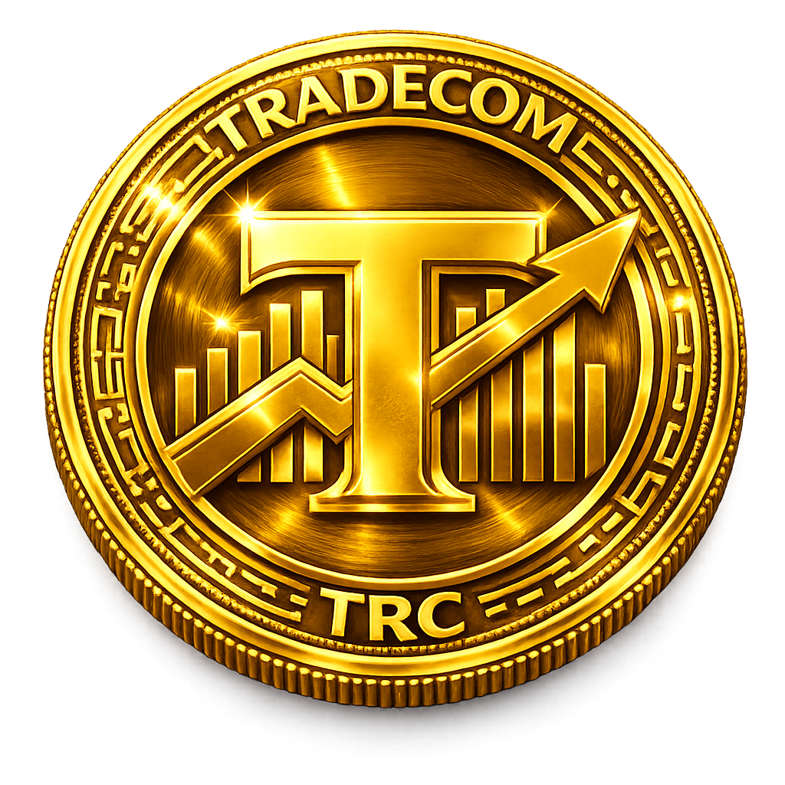
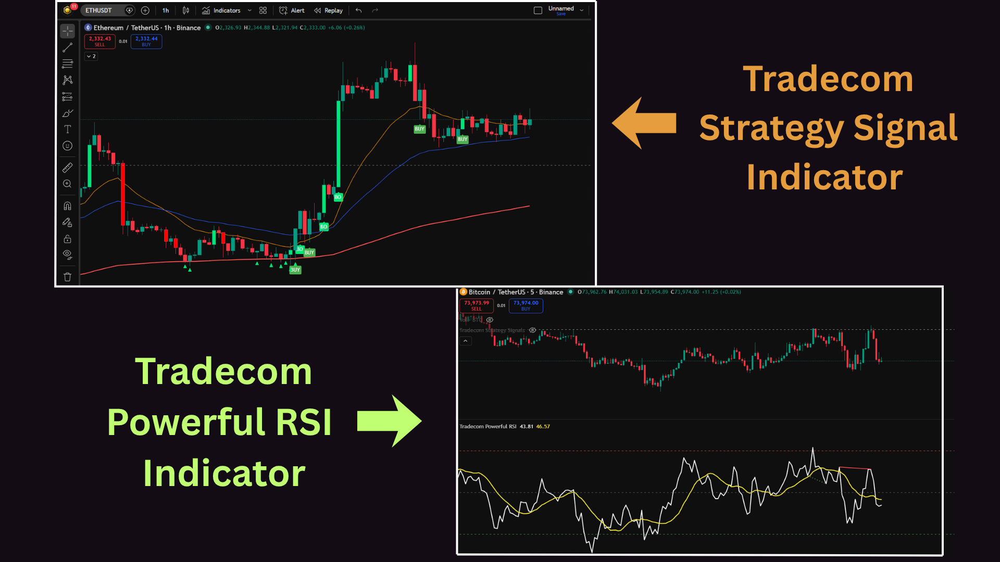

Polygon-Based Utility Token for the Trading Ecosystem
Tradecom (TRC) is a Polygon-based utility token designed for trading ecosystem development, DeFi tools, and community-driven growth with secure smart contract infrastructure. Designed for scalability and efficiency, TRC aims to provide real value through secure infrastructure, transparent tokenomics, and long-term sustainability.
Advanced strategy signals and powerful RSI tools designed for precision trading.

0x56620a4c9667375577B9D543440c3EFE7Ca75673
Tradecom (TRC) is designed with an extremely limited total supply of only 5000 tokens, making it a highly scarce digital asset.
Unlike high-supply tokens, TRC focuses on scarcity-driven value, ensuring stronger demand potential as the ecosystem grows.
🔒 Total supply is fixed and cannot be increased.
Allocated to development and marketing to support long-term ecosystem growth. This tax applies to all transactions (including transfers) to ensure equal contribution from all participants.
Designed to strengthen ecosystem stability and protect holders.
Tradecom follows a community-driven model, where decisions are influenced by token holders and liquidity providers, ensuring fair participation and decentralized control.
The tax system is designed to maintain price stability, reduce sudden dumping, strengthen liquidity, reward long-term holders, and support sustainable ecosystem growth.
✔ All taxes are fixed in the smart contract to ensure transparency and fairness.
Tradecom (TRC) applies a 5% transaction tax designed to ensure stability, reward holders, and support long-term ecosystem growth.
🔒 Fixed tax structure • No hidden fees • Built for sustainability
In today’s crypto market, many projects face issues like sudden price crashes, whale manipulation, and short-term pump-and-dump activity. Tradecom (TRC) addresses these challenges with a structured transaction tax model.
🔒 Designed to create a fair ecosystem where growth is driven by real adoption, not short-term speculation or manipulation.
⚠ While no system can fully eliminate market risks, TRC is designed to significantly reduce manipulation and protect long-term participants.
Smart contract available for participation.Click Below👇(ONLY FOR WHITELIST MEMBERS)
View Contract on PolygonScanPrice: $100 per TRC
Type: Fixed Price
Start Date: May 15
Price: $100 per TRC
Type: Fixed Price
Start Date: June 1
ICO rounds conclude upon reaching the maximum cap or after a 6-month duration from the start of Round 1.
Total ICO Rounds: 2
Initial Market Cap: $50,000
Starting Price: $150
Next prices are determined by supply and demand based on trading activity.
Tradecom aims to build a secure and professional trading ecosystem that combines advanced automated tools, DeFi solutions, and high-quality education into one unified platform.
Our vision is to create a sustainable environment where traders and investors can grow with confidence, supported by transparent systems, fair tokenomics, and long-term value creation.
We are committed to reducing market manipulation, improving trading efficiency, and empowering our community through technology, innovation, and trust.